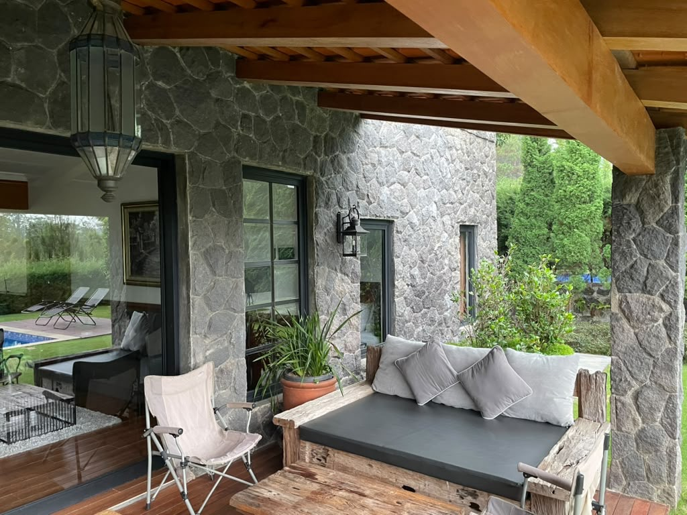

Nature, every day
Planting, paths and outdoor rooms bring the landscape into daily routines.

The vision
Luxury measured in space, stillness and a deeper connection to nature.
Discover moreOur point of departure
Mount Paradise begins with an existing stone villa in Trawas. Its sheltered terraces, substantial timber, natural stone and abundant planting give the project its architectural language. The ambition is to extend that sense of belonging into an intimate mountain community.


From the model villa
Stone with texture. Timber with warmth. Generous shelter from the rain. These details give the architecture its character and guide the new lodge studies.
Layered horticulture belongs at the heart of the design, softening the edges between home and landscape.
The guiding principles
Planting, paths and outdoor rooms bring the landscape into daily routines.
Space to walk, rest, swim and share nourishing meals. Clean water and thoughtful environmental design are priorities for the next planning stage.
A private home with its own garden, alongside inviting places to meet neighbors and gather with friends.